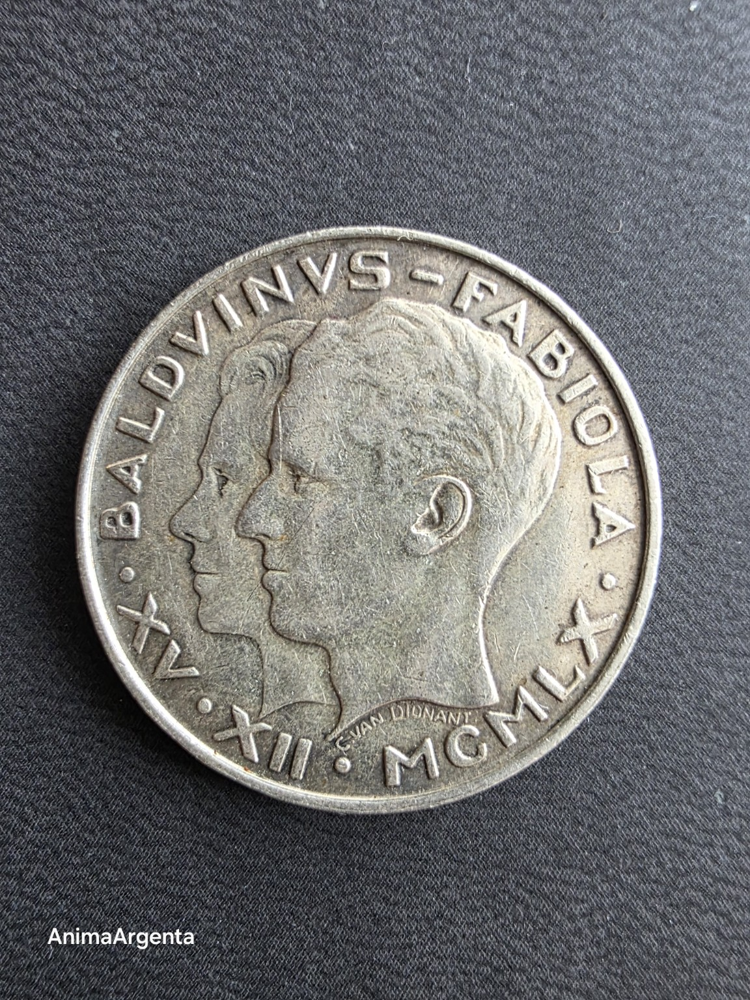
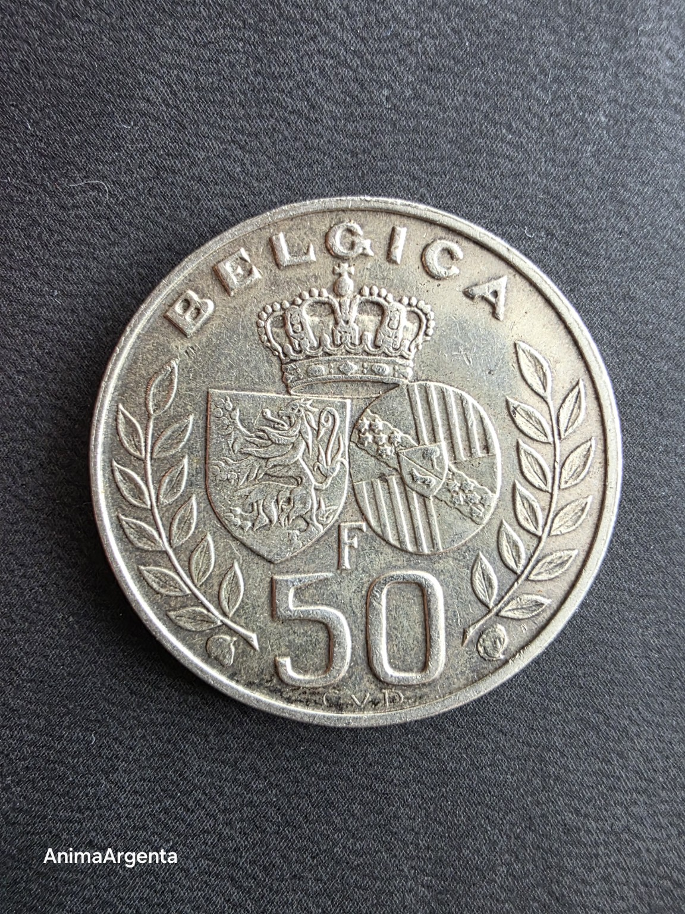
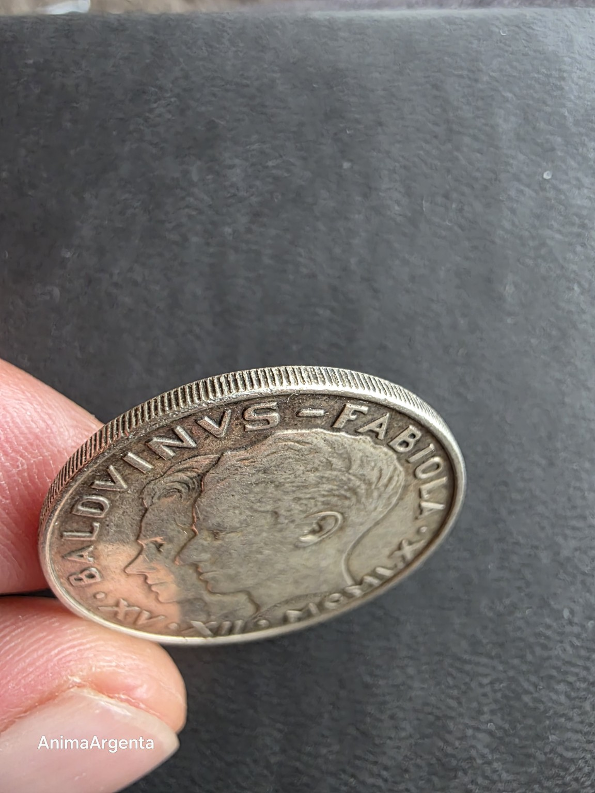

Dos nombres, una fecha
AA-1960-01 · edición 1/1



Dos perfiles avanzan en la misma dirección y dos escudos quedan unidos bajo una corona. Bélgica convirtió el matrimonio de Balduino y Fabiola, celebrado el 15 de diciembre de 1960, en una pieza destinada a circular: un acontecimiento íntimo transformado en memoria pública.
- Objeto
- Este ejemplar físico concreto
- Emisión
- 500.000 ejemplares
- Metal
- Plata 0,835
- Peso oficial
- 12,5 g
- Diámetro
- 30 mm
- Ceca
- Real Casa de la Moneda de Bélgica, Bruselas
- Diseño
- Carlos Van Dionant
- Canto
- Estriado
- Estado digital
- Preparado; aún no acuñado en cadena
Una moneda física = una pieza digital. Emisión prevista: 1. Sin reemisión.